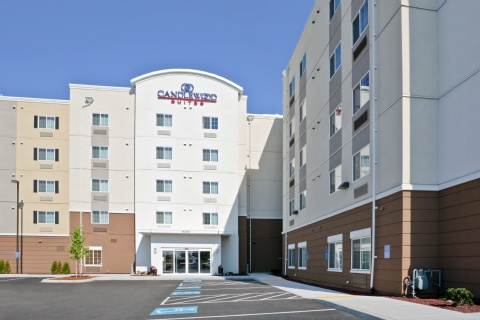

Outbound sequence
| Parking | Candlewood Suites Portland - Uncovered Self Park, 11250 Northeast Holman Street, Portland Google Maps |
| Parking Time | Sun, May 3, 9:00 PM PDT |
| Flight 1 | Southwest WN 3708, PDX to MDW Depart: Sun, May 3, 11:55 PM PDT Arrive: Mon, May 4, 5:50 AM CDT |
| MDW Layover | 1 hr 50 min |
| Flight 2 | Southwest WN 3336, MDW to PHL Depart: 7:40 AM CDT Arrive: 10:35 AM EDT, Terminal E |
| PHL Layover | 9 hr 55 min |
| Flight 3 | Aer Lingus EI 114, PHL to DUB Terminal: A East Depart: 8:30 PM EDT Arrive: Tue, May 5, 8:10 AM GMT+1, Terminal 2 |
| Car Pickup | Europcar, Tue, May 5, 12:00 PM GMT+1 Terminal 1 and 2, Dublin Airport Phone: 35318122800 Google Maps |
| Possible Destinations | Reading Terminal Market Liberty Bell Independence Hall |
✈️
Outbound travel summaryPortland parking, overnight Southwest flights, long Philadelphia layover, Aer Lingus flight to Dublin, and Europcar pickup at Dublin Airport.